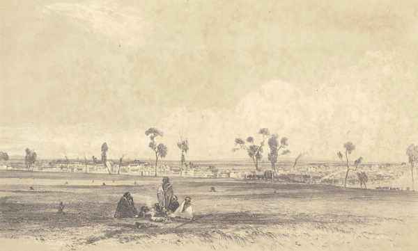

Nasza Rdzenna Historia
Kingston ma bogatą historię Aborygenów, a dziś mamy dumną, tętniącą życiem kulturę Aborygenów. Ludzie z przeszłości Boonwurrung byli związani z lądem i drogami wodnymi w okolicy. Działania i obozowiska były zależne od pór roku pozostawiły dowody na istnienie składowisk muszli i ... bliznowatych drzew w całym Kingston. Przy dobrej pogodzie obozowali wzdłuż nabrzeża, a przy złej pogodzie szukali schronienia w lesie lub w pobliżu skał. Dalej w głębi lądu żył klan Wurundjeri-baluk plemienia Woiworung. Wszyscy ci ludzie należeli do narodu aborygeńskiego, znanego jako naród Kulin, który zajmował większość zachodniej i centralnej Wiktorii. Rezerwat został utworzony dla Boonwurrung w Mordialloc na początku lat 40. XIX wieku, a teren ten jest teraz oznaczony flagą Aborygenów lecącą obok Mordialloc Creek.